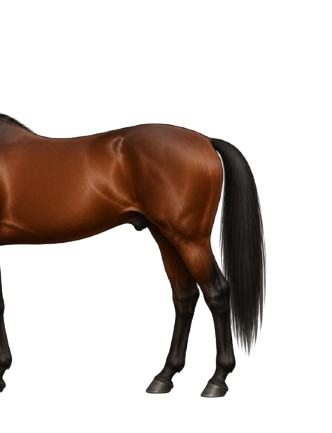

Two Views, One Horse
The horse is broken into two views to make the parts easier to learn in smaller groups. Start with the front, then move to the back.
💡 Did You Know
The withers — the highest point of the horse’s back, at the base of the neck — is the standard point for measuring a horse’s height. The unit of measurement (hands) dates to ancient Egypt, where one hand was defined as four fingers’ width, approximately 4 inches or 10.16 cm.
Front of the Horse

Front of Horse — Parts
Poll
The poll is the very top of the head, between the ears, and the highest point when the horse holds its head naturally.
Ears
The ears are large and mobile, rotating independently to pick up sounds. Ear position reflects how the horse is feeling.
Forelock
The forelock is the tuft of mane hair that falls from the poll between the ears onto the forehead.
Face
The face is the central area of the head between the forehead and the muzzle, along the nasal bone.
Nostril
The nostrils are the two openings on the muzzle through which the horse breathes. They flare wide during exercise or when the horse is alert.
Muzzle
The muzzle is the soft lower part of the face, including the nostrils and lips. Horses use the muzzle to explore and handle food.
Throatlatch
The throatlatch is where the underside of the jaw meets the top of the neck. A bridle strap of the same name passes through this area.
Neck
The neck connects the head to the shoulder and body. Its length and angle affect how the horse balances and moves under saddle.
Mane
The mane is the long hair growing from the top ridge of the neck. It typically falls to one side and acts as a natural fly deterrent.
Withers
The withers are the highest point of the back, between the shoulder blades. Horse height is measured here in hands.
Shoulder
The shoulder is the large area of the upper foreleg and shoulder blade. Shoulder angle affects stride length and smoothness of movement.
Chest
The chest is the muscular front of the body between the front legs.
Knee
The knee is the middle joint of the front leg, equivalent to the human wrist, and one of the most closely monitored joints for soundness.
Back of the Horse

Back of Horse — Parts
Withers
The withers are the highest point of the back, marking where the back begins and serving as the standard measuring point for horse height.
Back
The back is the area between the withers and the hindquarters where the saddle sits. A strong back supports the rider.
Croup
The croup is the top of the hindquarters, from the highest point of the pelvis toward the tail. Croup slope varies between breeds.
Dock
The dock is the bony upper root of the tail, containing vertebrae and muscle. Tail bandaging always starts here.
Tail
The tail is the long hair hanging from the dock, used to swish flies and communicate mood.
Barrel
The barrel is the rounded ribcage section between the forelegs and the flank. A rider's leg rests against the barrel when riding.
Flank
The flank is the soft area behind the barrel and in front of the hindquarters, and a sensitive region.
Thigh
The thigh is the muscular upper section of the hind leg. A well-developed thigh indicates good overall conditioning.
Buttock
The buttock is the rounded, muscular area at the back of the hindquarters. The point of buttock is the most rearward bony prominence, easy to see when viewing a horse from the side.
Hock
The hock is the large angled joint in the middle of the hind leg, equivalent to the human ankle, and flexes with every stride.
Cannon
The cannon is the large bone between the knee or hock and the fetlock, and the most prominent bone of the lower leg.
Fetlock
The fetlock is the prominent joint between the cannon bone and the pastern, on all four legs.
Pastern
The pastern is the sloping section between the fetlock and the hoof. Its angle affects how the horse absorbs concussion.
Hoof
The hoof is the hard outer casing that protects the foot and needs regular trimming and farrier care.